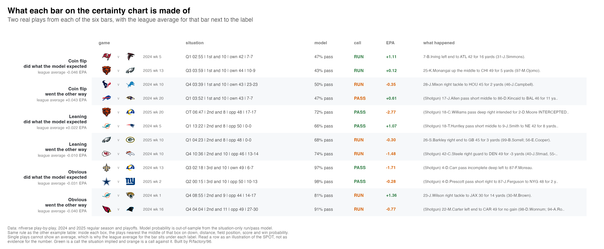
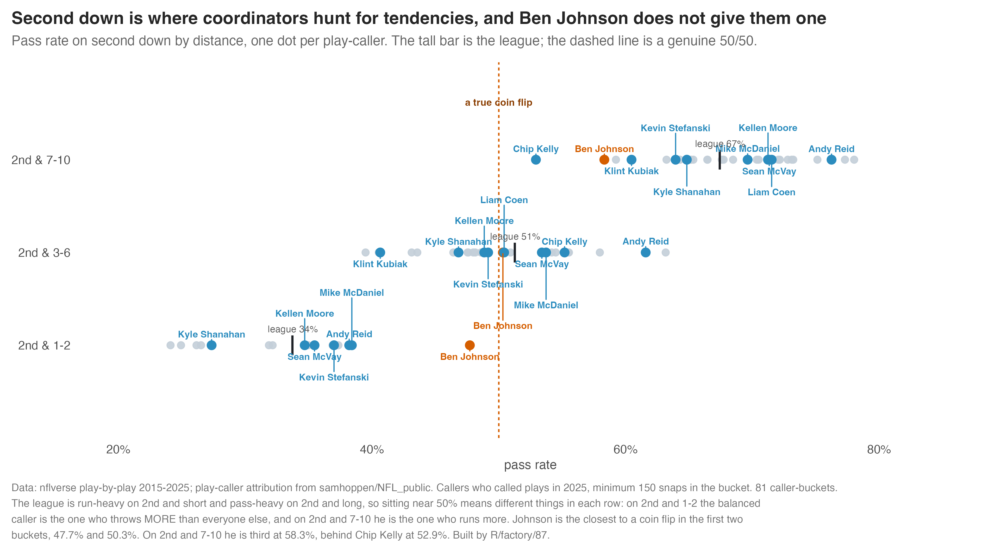
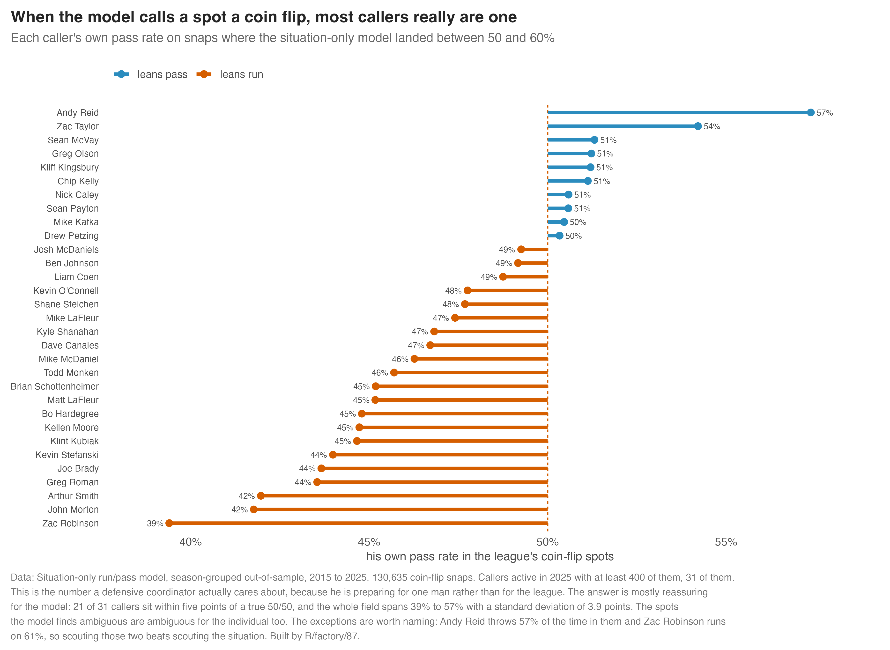
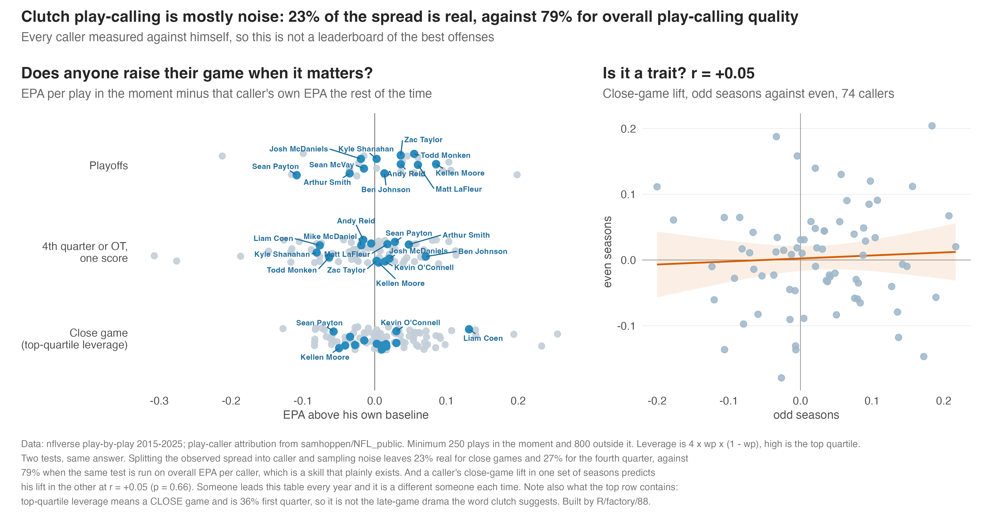
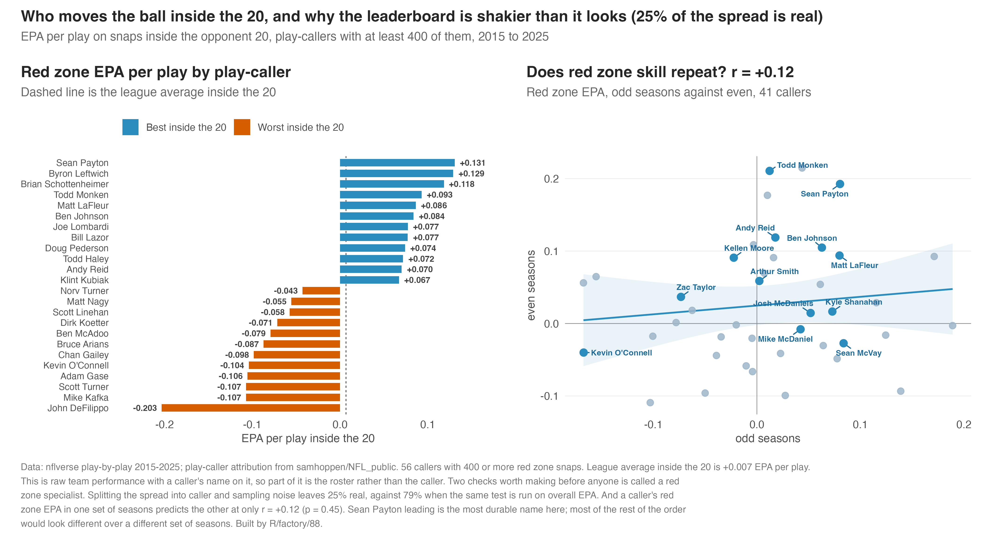
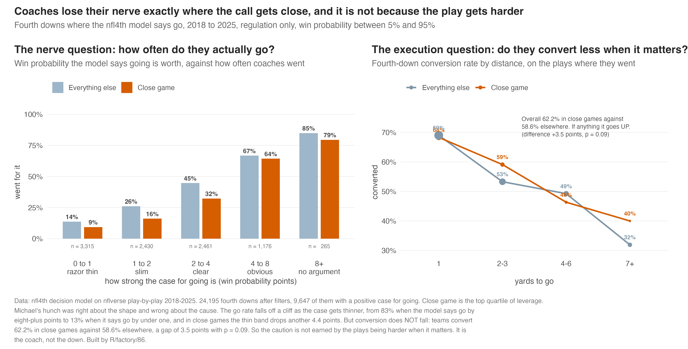
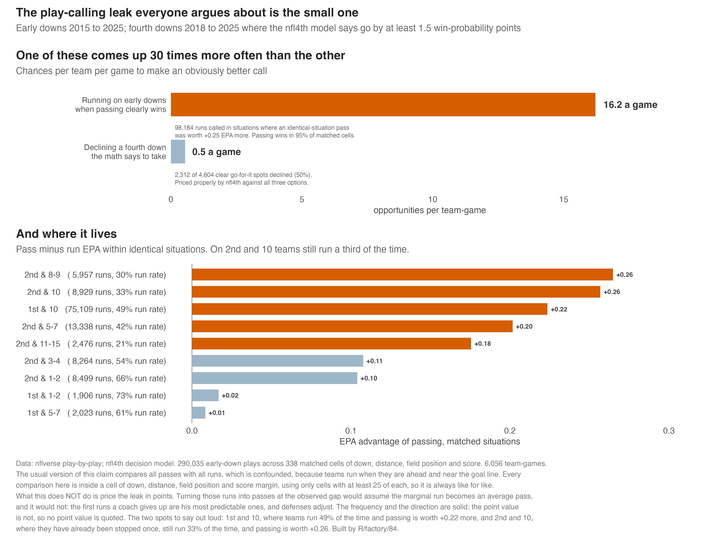
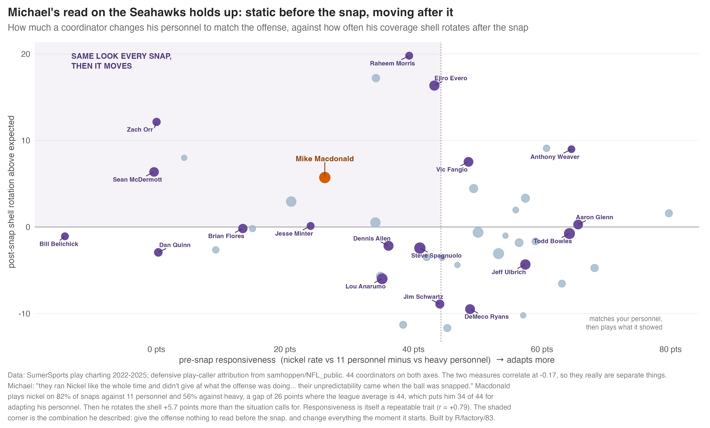
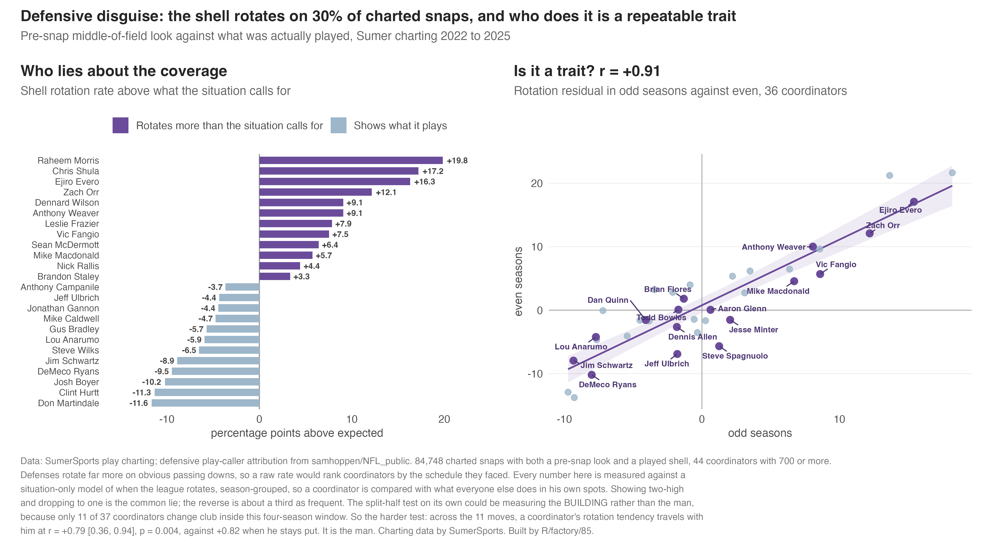

Script Outline
The script outline in order, with our best version of each thing underneath it. Orange boxes are where we do not have something solid yet.
Setup: Defense vs. Offense — McVay vs. MacDonald
McVay (offense)


MacDonald (defense)


Have coordinators decreased in age? How much? Offense? Defense?

The Seahawks defense struggled against the Rams, but their offense shredded them

Personnel
What 11 and 13 personnel are, and who uses them

What Sean McVay did
How does this do against lighter boxes?

Is play action more effective out of 13 personnel?

Run vs. Pass


What a coin-flip high-leverage play is
Two things have to be true at once. High leverage means the game is still live, with win probability between 36% and 64%. That is the top quarter of all snaps by how much a single play can swing the result. Coin flip means the situation gives the defense nothing, with the model landing between 50 and 60% on run or pass. It knows down, distance, field position, score and clock, and it does not know who is playing. The two together are 10.6% of all called plays, and the typical one is 1st and 10 near midfield in a one-score game.
One thing to say carefully on camera. High leverage here means a close game, not a late one. Leverage peaks when a game is even and games are most even at the start, so 36% of the high-leverage bucket is the first quarter and only 14% is the fourth. That is why several of the examples below are tied in the first quarter.


When is it worth being unpredictable?
How to read the next chart. The model gives every snap a run/pass probability from the situation alone. How far that number sits from 50/50 is how obvious the call was, and the league splits into roughly even thirds: coin flip at 50 to 60% sure, leaning at 60 to 80%, obvious at 80% or more. Within each third, compare the plays where the caller did the expected thing against the plays where he did not. On obvious calls, going against the situation costs 0.04 EPA a play. On coin flips it gains 0.09. The book is right on the easy hands, and the game is what you do on the hard ones.




Is the coach a coin flip, or only the situation?
The model calls a spot 50/50 because that is what the league does there. A defensive coordinator is preparing for one man, not the league, so the question worth asking is what each caller does in those same spots. Mostly the answer is reassuring: 21 of 31 callers sit within five points of a true 50/50, and the whole field spans 39% to 57%. Second down is where coordinators go looking for a tendency, and that is where the differences show up.


4th Downs
How do coaches look here?
Every fourth-down chart on this page is credited to the head coach, not the play-caller. That is why Mike Macdonald appears on them even though he calls the defense. The head coach has the final say on whether to go, and it lands on him when it fails.

Old coaches against young coaches

Coaches will punt when they should go for it, but not the other way around


Is anyone clutch?
Michael asked whether some coaches dial it up better than others when it matters. Measured against each caller own baseline, the gaps are there but they do not survive a noise test: only 23% of the spread in close-game performance is real, against 79% when the same test is run on overall play-calling quality. A caller close-game lift in one set of seasons predicts his lift in the other at r = +0.05. Someone tops this table every year and it is a different someone each time.

What play-callers have success in the red zone?

Where the nerve goes, and whether it is earned
Michael: "I bet on like 4th and 5 or something teams are wayyyy less likely to go for it if it is close? Those more iffy go-for-it situations, I bet we see a huge falloff." Right about the shape. On 4th and 5 where the book says go, teams go 12% of the time. On 4th and 6, 8%. On 4th and 1, 61%. And in close games the go rate is lower in every single band.
The follow-up was whether conversions get worse under pressure, which would make the caution justified. They do not. Teams convert 62.2% in close games against 58.6% everywhere else, a difference of +3.5 points (p = 0.09) in the wrong direction for that argument. The caution is the coach, not the down.

What the decisions cost


Running on early downs
Where can play-calling obviously be improved?
Michael asked where the obvious improvements are. The answer is not that the early-down run is a mistake, which everyone has said. It is the scale gap. Fourth down is the leak the internet argues about and it comes up about half a time per team per game. Running on early downs in spots where passing clearly wins comes up 16 times a game. Thirty times the volume, a fraction of the attention.

Teams are still doing this too much

Which play-callers are best and worst at it?

Adaptability
First half vs second half adjustments

Adapting to the players you have
Kyle Shanahan and Ben Johnson


Disguise (offense and defense)
Same look, different play
This is the one that worked. For every caller and every look he uses (formation crossed with personnel), compare what he actually called against what the situation alone predicted. That isolates what the look gives away on top of the down, distance, score and clock the defense already knows. Every gap is shrunk by its own standard error first, which is the step the earlier pre-snap chart was missing.

Static before the snap, moving after it
Michael: "I think the Seahawks defense was very predictable in terms of formation. They ran Nickel like the whole time and did not give af what the offense was doing. But their unpredictability came when the ball was snapped." Both halves check out, and they are close to independent measures (r = -0.17), so this is a real two-axis idea.

Defense: showing one coverage and playing another
This is the defensive half, and it comes from SumerSports charting, which records the middle-of-field shell both before the snap and as actually played. The shell rotates on 30% of charted snaps. Showing two-high and dropping to one is the common lie; the reverse is about a third as frequent.
The two yellow dots are the safeties. Everything else holds still, which is the point: the front seven can look identical on every snap while the back end changes what it is. Sumer charts the middle of the field twice, once as it looked before the snap and once as it was played, and those two disagree on 30% of charted snaps. Mike Macdonald rotates 5.7 points more often than his situations call for.

The strongest version of the claim: this is the man, not the building. Sumer only covers four seasons, so most coordinators never change club inside it, and a split-half test alone could just be measuring the same roster and secondary. Across the 11 coordinators who did move, the rotation tendency travels with them: r = +0.79 [0.36, 0.94], p = 0.004, against +0.82 for those who stayed put.
Worth saying carefully on camera: rotating more does not mean allowing less. Across coordinators, rotation above expected and EPA allowed correlate at r = +0.22 (p = 0.16). This measures a style that is unmistakably real and repeatable, not one that is proven to work.
Where the rest of this stands
Sequencing is still open, and the older pre-snap tell chart below is superseded by the two above. Research ideas at the bottom for the group to pick from.

Research ideas to discuss
- Motion at the snap versus motion before it. FTN flags motion but not whether the man was still moving at the snap. Split those and the deception question gets sharper, because only one of them actually moves a defender late.
- Formation variety per caller. How many distinct formation and personnel combinations does a caller use, and does a wider menu buy anything? Entropy over the look distribution, same method as the predictability work.
- Same look, different play. Built, and it is now the chart at the top of this section.
- Late motion and defensive response. Participation data has the defensive personnel on the field. If the defense substitutes or changes shell after motion, that is deception working. Needs care but the fields exist.
- Cadence and hard counts. Pre-snap penalties drawn on the defense per snap is a crude but real proxy for a caller who manipulates cadence. Nobody publishes it as a coaching stat.
- Play-action after a run versus after a pass. Directly tests the sequencing claim below with the disguise framing: is the fake more convincing when the run game has been established that drive?
Sequencing
Play action: rate, and what the situation expected


Does running set up the play-action pass?


Still to do: a literature check on what is already published on sequencing, so we are not re-deriving something or contradicting a known result without knowing it. Worth asking Paganetti directly, since this is his area.
Play Action
Everything on play action in one place